An Encoding of Interaction Nets in OCaml
Nikolaus Huber & Wang Yi
Uppsala University
Motivation
- Most existing encodings focus on efficiency
- Original paper already presented a type system
- Can we express the original type system in OCaml?
- Can we make use of OCaml's support for parallelism?
Interaction nets
- Visual programming language
- Invented by Yves Lafont [1]
- Used for optimal [2] and efficient [3] implementations of $\lambda$-calculus
[1] Interaction Nets
Yves Lafont
ACM SIGPLAN-SIGACT Symposium on Principles of Programming lLanguages (POPL 1990)
ACM SIGPLAN-SIGACT Symposium on Principles of Programming lLanguages (POPL 1990)
[2] The geometry of optimal lambda reduction
Georges Gonthier, Martín Abadi & Jean-Jacques Lévy
ACM SIGPLAN-SIGACT Symposium on Principles of Programming Languages (POPL 1992)
ACM SIGPLAN-SIGACT Symposium on Principles of Programming Languages (POPL 1992)
[3] YALE: yet another lambda evaluator based on interaction nets
Ian Mackie
ACM SIGPLAN International Conference on Functional Programming (ICFP 1998)
ACM SIGPLAN International Conference on Functional Programming (ICFP 1998)
Properties of Interaction nets
- Locality of reduction
$\Rightarrow$ parallelism - Strong confluence
$\Rightarrow$ determinism - Turing complete
Agents
$\alpha, \beta, \gamma \in \Sigma$ (label set)
$ar : \Sigma \rightarrow \mathbb{N}$ (arity function)
Rules

$(\alpha \times \beta \rightarrow N) \in \mathscr{R}$ (rule set)
Rule application
- Rules are symmetric:
$(\alpha \times \beta) \rightarrow N \equiv (\beta \times \alpha) \rightarrow N$ - For each pair $\alpha \times \beta$ there is
at most one rule in $\mathscr{R}$ - Rewriting must
preserve the interface of the active pair
$\Rightarrow$ rewriting is
Typed agents
- value type (int, bool, list, ...)
- polarity ($+$, $-$)
Example
First encoding
type id =
| T
| F
| And
type agent = {
id : id;
ports : agent Array.t;
}
Compilation of Interaction Nets
Abubakar Hassan, Ian Mackie, Shinya Sato
Electronic Notes in Theoretical Computer Science 253 (2009)
Electronic Notes in Theoretical Computer Science 253 (2009)
A Simple Parallel Implementation of Interaction Nets in Haskell
Wolfram Kahl
Electronic Proceedings in Theoretical Computer Science 179 (2015)
Electronic Proceedings in Theoretical Computer Science 179 (2015)
Second encoding
type agent =
| T
| F
| And of agent * agent
- Arity is enforced by type-system
- A value of type
agent represents the principle port - Nets are constructed by recursive application of constructors
Auxiliary connections
Auxiliary connections
Auxiliary connections
type agent =
| T
| F
| And of agent * agent
| NamePos of agent promise
| NameNeg of agent resolver
let new_name () =
let promise, resolver = make_future () in
NamePos promise, NameNeg resolver
Encoding rule application
Encoding rule application
let rec apply_rule a1 a2 =
match a1, a2 with
| T, And (r, b)
| And (r, b), T -> b -><- r
| _, _ -> failwith "No rule"
and ( -><- ) a1 a2 =
run_async pool
(fun _ -> apply_rule a1 a2)
Encoding rule application
Encoding rule application
let rec apply_rule a1 a2 =
match a1, a2 with
...
| F, And (r, _)
| And (r, _), F -> F -><- r
...
Encoding rule application
let rec apply_rule a1 a2 = match a1, a2 with
| T, And (r, b)
| And (r, b), T -> b -><- r
| F, And (r, b)
| And (r, _), F -> F -><- r
| NamePos v, a
| a, NamePos v -> await v -><- a
| NameNeg v, a
| a, NameNeg v -> resolve v a
| _, _ -> failwith "No rule"
New agents

New agents
type agent =
| Int of int
| IsEven of agent
| T
| F
| And of agent * agent
| NamePos of agent promise
| NameNeg of agent resolver
Rewriting with attributes
Rewriting with attributes
let rec apply_rule a1 a2 =
match a1, a2 with
...
| IsEven r, Int n
| Int n, IsEven r when n mod 2 = 0
-> T -><- r
| IsEven r, Int _
| Int _, IsEven r
-> F -><- r
...
Problems
- Symmetry $\Rightarrow$ verbosity
- Catch-all case (_, _)
- Types are not enforced
- $\Rightarrow$ $T \rightarrow\leftarrow \text{IsEven} (r)$ is accepted
- Polarity is not enforced
- $\Rightarrow$ $T \rightarrow\leftarrow T$ is accepted
Type compatibility
type agent =
| Int of int
| IsEven of agent
| T
| F
| And of agent * agent
| NamePos of agent promise
| NameNeg of agent resolver
Type compatibility
type _ agent =
| Int : int -> int agent
| IsEven : bool agent -> int agent
| T : bool agent
| F : bool agent
| And : bool agent * bool agent -> bool agent
| NamePos : 'a agent promise -> 'a agent
| NameNeg : 'a agent resolver -> 'a agent
Type compatibility
type _ agent =
| Int : int -> int agent
| IsEven : bool agent -> int agent
| T : bool agent
| F : bool agent
| And : bool agent * bool agent -> bool agent
| NamePos : 'a agent promise -> 'a agent
| NameNeg : 'a agent resolver -> 'a agent
- Uses Generalised Algebraic Data Types (GADTs)
- Each constructor case case restrict the type variable independently
Polymorphic recursion
So far:
let rec apply_rule : agent -> agent -> unit =
fun a1 a2 -> ...
and (-><-) : agent -> agent -> unit =
fun a1 a2 -> ...
For GADTs we need type annotations:
let rec apply_rule : type a. a agent -> a agent -> unit =
fun a1 a2 -> ...
and (-><-) : type a . a agent -> a agent -> unit =
fun a1 a2 -> ...
Polarity
type _ agent =
| Int : int -> int agent
| IsEven : bool agent -> int agent
| T : bool agent
| F : bool agent
| And : bool agent * bool agent -> bool agent
| NamePos : 'a agent promise -> 'a agent
| NameNeg : 'a agent resolver -> 'a agent
Polarity
type pos = |
type neg = |
type (_, _) agent =
| Int : int -> (int, pos) agent
| IsEven : (bool, neg) agent -> (int, neg) agent
| T : (bool, pos) agent
| F : (bool, pos) agent
| And : (bool, neg) agent * (bool, pos) agent
-> (bool, neg) agent
| NamePos : ('a, pos) agent promise -> ('a, pos) agent
| NameNeg : ('a, pos) agent resolver -> ('a, neg) agent
Final rule encoding
let rec apply_rule :
type a. (a, pos) agent -> (a, neg) agent -> unit =
fun a1 a2 -> match a1, a2 with
| T, And (r, b) -> b -><- r
| F, And (r, _) -> F -><- r
| Int n, IsEven r when n mod 2 = 0 -> T -><- r
| Int _, IsEven r -> F -><- r
| T, If (r, t, _) -> t -><- r
| F, If (r, _, e) -> e -><- r
| NamePos v, a -> await v -><- a
| a, NameNeg v -> resolve v a
and ( -><- ) :
type a. (a, pos) agent -> (a, neg) agent -> unit =
fun a1 a2 -> run_async pool (fun _ -> apply_rule a1 a2)
Benchmarks
- Manually encoded example nets
- Fibonacci, Mergesort, Quicksort
- Run on 3.70 GHz Intel Core i9 (10 cores $\times$ 2 threads)
- Run with different thread counts
- Averaged over 100 runs
Speedup
CPU migrations
Fibonacci example
Tool comparison (Fibonacci)
Conclusion
- First embedding of interaction nets into OCaml
- First embedding of Lafont's type system
- For some algorithms $\Rightarrow$ speedup through parallelism
Future work
- Need more benchmarks
- Garbage collection
- Cache behaviour
- Try different parallelism-library
- Compiler
- Formal verification of interaction nets?
Questions?
This work has been partially supported by
the ERC CUSTOMER project
the ERC CUSTOMER project